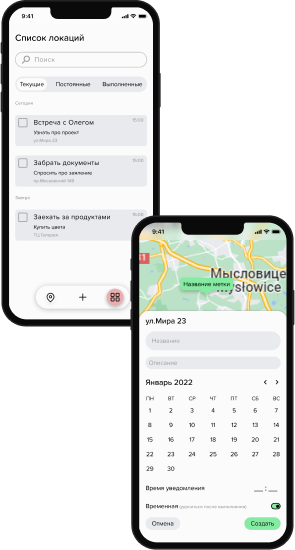

Geo
Organizer
Твои заметки на карте
В чём уникальность проекта?
Это интерактивная карта с возможностью создавать метки с
умными уведомлениями
Карта
Календарь
Рекомендации
Управление
временем
временем
Система для организации и
структурирования задач
Использование географической карты и нейронных
сетей для обеспечения комфортного
планирования
рабочего процесса


В чем уникальность
проекта?
Это интерактивная карта с возможностью
создавать метки с умными
уведомлениями

developed by solarsnowlight.ru